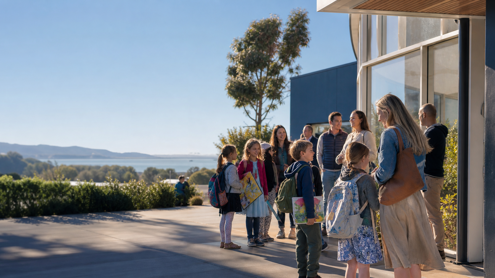

NAUJIENŲ ARCHYVAS
Naujiena

Šiame archyvo įraše saugome svarbią mokyklos bendruomenės akimirką. Nuotraukas ir papildomą informaciją galima papildyti šiame straipsnyje, nekeičiant naujienų sąrašo.
NAUJIENŲ ARCHYVAS

Šiame archyvo įraše saugome svarbią mokyklos bendruomenės akimirką. Nuotraukas ir papildomą informaciją galima papildyti šiame straipsnyje, nekeičiant naujienų sąrašo.